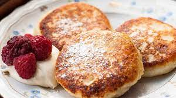

Syrniki

Russian breakfast or dessert. Fried quark cheese
patties. Crisp outside and warm and creamy inside.
Serve with jam or sour cream.
Ingredients
- 2 1⁄4 pounds quark cheese
- 2⁄3 cup all-purpose-flour, sifted
- 1⁄4 cup white sugar
- 1⁄4 cup raisins, or to taste (Optional)
- 2 eggs
- 1⁄2 teaspoon baking soda
- 1⁄4 teaspoon vanilla extract
- 2 pinches salt
- 1⁄4 cup all-purose-flour, or as needed
- 1⁄4 cup vegetable oil, or as needed
Steps
-
Strain or process quark cheese through a sieve or
meat grinder to achieve a powdery consistency. Mix
quark cheese, 2/3 cup flour, sugar, raisins, eggs,
baking soda, vanilla extract, and salt together in a
bowl until batter is well mixed.
-
Pour 1/4 cup flour into a small bowl.
-
Roll batter, about 2 tablespoons per serving, into a
ball and roll in flour until coated. Flatten each
ball into a 2-inch patty, squaring off the edges.
-
Heat about 1 1/2 tablespoons oil in a skillet over
medium-low heat. Fry patties, working in batches, in
the hot oil until dark brown and a shell has formed,
3 to 4 minutes per side. Transfer to a paper
towel-lined plate. Repeat with remaining oil and
patties.